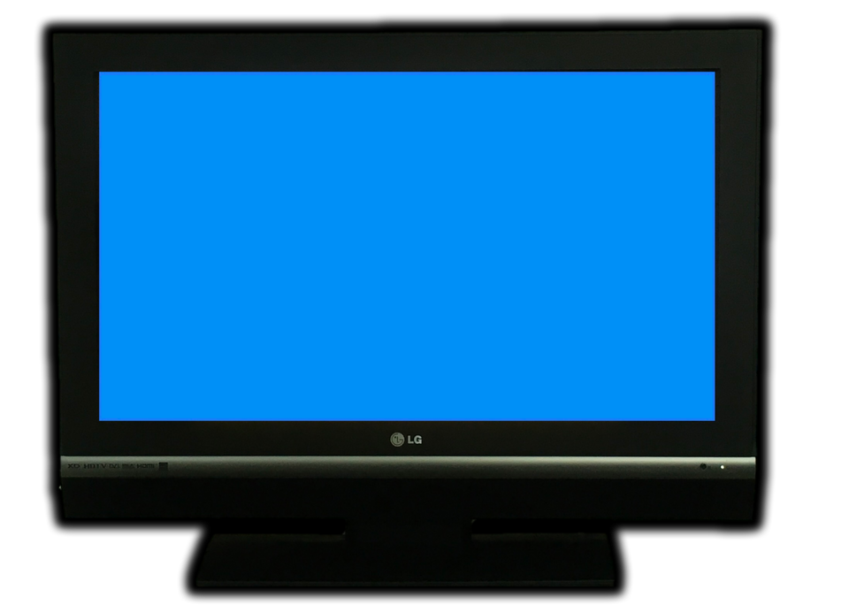
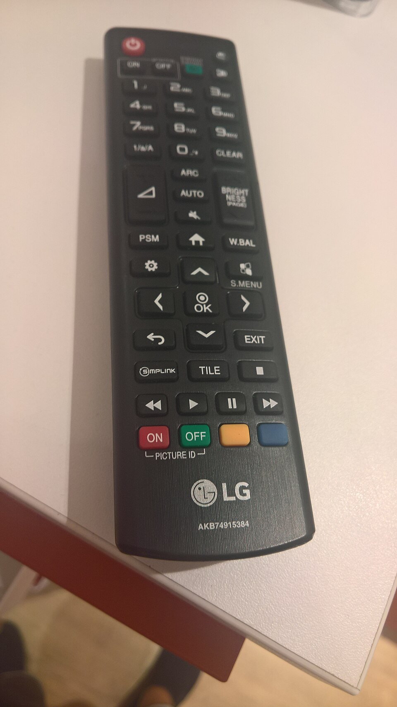

Αν ψάχνεις για lg tv iptv, μάλλον έχεις στο σαλόνι σου μια τηλεόραση LG με webOS και θέλεις να δεις ελληνικά κανάλια, αθλητικά, ταινίες και σειρές χωρίς δορυφορική κεραία και χωρίς πολύπλοκα καλώδια. Η καλή είδηση είναι ότι οι σύγχρονες LG Smart TV είναι από τις πιο φιλικές συσκευές για IPTV: έχουν γρήγορο επεξεργαστή, εξαιρετική οθόνη OLED ή NanoCell και ένα ολοκληρωμένο κατάστημα εφαρμογών, το LG Content Store, απ' όπου μπορείς να εγκαταστήσεις έναν IPTV player σε λίγα λεπτά.
Στον οδηγό αυτό θα δεις πώς ακριβώς δουλεύει το IPTV σε μια LG τηλεόραση, ποιες εφαρμογές αξίζει να χρησιμοποιήσεις, πώς να προσθέσεις τη συνδρομή σου βήμα προς βήμα και τι να κάνεις όταν κάτι δεν πάει καλά (buffering, μαύρη οθόνη, χαμένα κανάλια). Θα δούμε επίσης πώς η υπηρεσία greek iptv προσφέρει πάνω από 30.000 κανάλια και 150.000 ταινίες και σειρές, με ελληνικά κανάλια σε HD και 4K, ώστε να έχεις πλήρη εμπειρία Ελλάδας όπου κι αν ζεις: στη Γερμανία, στην Αυστραλία, στις ΗΠΑ ή στην Κύπρο.
Ο οδηγός είναι γραμμένος για απλούς χρήστες. Δεν χρειάζεται να είσαι τεχνικός: αρκεί να έχεις το τηλεχειριστήριο Magic Remote, σύνδεση στο ίντερνετ και τα στοιχεία της συνδρομής σου. Αν θέλεις πρώτα μια πιο εξειδικευμένη ματιά στο λειτουργικό σύστημα webOS, δες και το άρθρο μας LG IPTV: Οδηγός Εγκατάστασης για LG Smart TV webOS 2026.
Περιεχόμενα
- Τι είναι το LG TV IPTV και πώς λειτουργεί
- Ποια μοντέλα LG υποστηρίζουν IPTV
- Οι καλύτερες εφαρμογές IPTV για LG webOS
- Βήμα-βήμα εγκατάσταση στην LG τηλεόραση
- Ελληνικά κανάλια, αθλητικά και ταινίες
- Ταχύτητα ίντερνετ και σταθερή ροή
- Συχνά προβλήματα και λύσεις
- Συμβουλές για καλύτερη εμπειρία
- Ασφάλεια και προστασία δεδομένων
- Σύγκριση με άλλες συσκευές
- Συχνές ερωτήσεις
Τι είναι το LG TV IPTV και πώς λειτουργεί
Το IPTV (Internet Protocol Television) είναι η μετάδοση τηλεοπτικού σήματος μέσω ίντερνετ αντί για κεραία, καλώδιο ή δορυφόρο. Στην πράξη, μια εφαρμογή στην LG τηλεόρασή σου συνδέεται με έναν διακομιστή, κατεβάζει τη λίστα καναλιών και αναπαράγει το σήμα σε πραγματικό χρόνο. Όταν λέμε «lg tv iptv» εννοούμε ακριβώς αυτό το συνδυασμό: την LG Smart TV ως συσκευή προβολής και μια υπηρεσία IPTV ως πηγή περιεχομένου.

Η διαφορά από την παραδοσιακή τηλεόραση
Στην παραδοσιακή τηλεόραση το περιεχόμενο εκπέμπεται ταυτόχρονα σε όλους. Στο IPTV ο κάθε χρήστης ζητά το κανάλι που θέλει και ο διακομιστής του το στέλνει. Αυτό σημαίνει ότι έχεις πρόσβαση σε χιλιάδες κανάλια από όλο τον κόσμο, καταγραφή προγράμματος (EPG), αναπαραγωγή ξανά πρόσφατων εκπομπών (catch-up) και ταινίες ή σειρές on demand, όλα μέσα από την ίδια εφαρμογή.
Τι χρειάζεσαι για να ξεκινήσεις
- Μια LG Smart TV με webOS (προτιμότερα 2018 και μετά).
- Σύνδεση στο ίντερνετ, ιδανικά ενσύρματη (Ethernet) ή 5 GHz Wi-Fi.
- Μια ενεργή συνδρομή IPTV, π.χ. από το greek iptv.
- Μια εφαρμογή IPTV player από το LG Content Store.
Ποια μοντέλα LG υποστηρίζουν IPTV
Σχεδόν όλες οι LG Smart TV που κυκλοφόρησαν μετά το 2016 υποστηρίζουν εφαρμογές IPTV. Η διαφορά βρίσκεται στην έκδοση του webOS, η οποία καθορίζει ποιες εφαρμογές είναι διαθέσιμες και πόσο γρήγορα ανοίγουν.
Έκδοση webOS και διαθεσιμότητα εφαρμογών
| Έκδοση webOS | Έτος μοντέλου | Υποστήριξη IPTV |
|---|---|---|
| webOS 3.x | 2016–2017 | Βασική, περιορισμένες εφαρμογές |
| webOS 4.x – 5.x | 2018–2021 | Πολύ καλή, όλοι οι κύριοι players |
| webOS 6.x και νεότερα | 2021–2026 | Άριστη, 4K και HDR |
Τι κάνεις αν η τηλεόρασή σου είναι παλιά
Αν η LG σου δεν υποστηρίζει τις εφαρμογές που χρειάζεσαι, δεν χρειάζεται να την αλλάξεις. Μπορείς να συνδέσεις ένα Amazon Fire TV Stick, ένα Android TV Box ή ένα Apple TV μέσω HDMI. Έτσι ο παλιός πίνακας μετατρέπεται σε μια πλήρη συσκευή IPTV, και η συνδρομή σου λειτουργεί ακριβώς το ίδιο. Για περισσότερες επιλογές με Android συσκευές δες και το Kodi IPTV: Οδηγός Ρύθμισης για Ελληνικά Κανάλια 2026.
Οι καλύτερες εφαρμογές IPTV για LG webOS
Το LG Content Store έχει αρκετούς IPTV players. Δεν είναι όλοι ίδιοι: κάποιοι είναι πιο γρήγοροι, άλλοι έχουν καλύτερο EPG και άλλοι υποστηρίζουν καλύτερα τα αρχεία M3U. Παρακάτω θα βρεις τις πιο δημοφιλείς επιλογές.
Smart IPTV (SIPTV)
Είναι μία από τις πιο γνωστές εφαρμογές για LG. Φορτώνεις τη λίστα σου μέσω της ιστοσελίδας της εφαρμογής, χρησιμοποιώντας τη διεύθυνση MAC της τηλεόρασης. Είναι απλή και σταθερή, αν και η διεπαφή της είναι βασική.
SS IPTV
Η εφαρμογή SS IPTV είναι δωρεάν, ελαφριά και υποστηρίζει λίστες M3U από σύνδεσμο. Έχει καλή υποστήριξη ομάδων καναλιών και είναι ιδανική για όσους θέλουν κάτι που ανοίγει γρήγορα.
IPTV Smarters Pro και παρόμοιες εφαρμογές
Αν προτιμάς ένα σύγχρονο περιβάλλον με κατηγορίες Live, Ταινίες και Σειρές, μπορείς να δοκιμάσεις εφαρμογές τύπου Smarters. Στην περίπτωση που η εφαρμογή δεν υπάρχει στο κατάστημα της LG σου, μπορείς να χρησιμοποιήσεις εξωτερική συσκευή. Η υπηρεσία greek iptv λειτουργεί με όλες τις παραπάνω εφαρμογές.
Βήμα-βήμα εγκατάσταση στην LG τηλεόραση
Η διαδικασία διαρκεί περίπου πέντε λεπτά. Ακολούθησε τα παρακάτω βήματα με το Magic Remote στο χέρι.
Βήμα 1: Εγκατάσταση της εφαρμογής
- Πάτησε το κουμπί Home στο τηλεχειριστήριο.
- Άνοιξε το LG Content Store.
- Αναζήτησε «Smart IPTV» ή «SS IPTV».
- Πάτησε Εγκατάσταση και περίμενε να ολοκληρωθεί.
Βήμα 2: Εύρεση της διεύθυνσης MAC
Άνοιξε την εφαρμογή. Στην πρώτη οθόνη θα εμφανιστεί η διεύθυνση MAC της τηλεόρασης ή ένας κωδικός συσκευής. Σημείωσέ τον, γιατί θα τον χρειαστείς στο επόμενο βήμα.
Βήμα 3: Προσθήκη της συνδρομής σου
Αφού αποκτήσεις συνδρομή από το greekiptv.tv, θα λάβεις τα στοιχεία σύνδεσης ή τον σύνδεσμο M3U. Μπες στην ιστοσελίδα της εφαρμογής από υπολογιστή ή κινητό, γράψε τη διεύθυνση MAC και πρόσθεσε τον σύνδεσμο. Σε εφαρμογές που δέχονται σύνδεση με όνομα χρήστη και κωδικό, απλώς πληκτρολόγησέ τα απευθείας στην τηλεόραση.
Βήμα 4: Επανεκκίνηση και έλεγχος
Κλείσε την εφαρμογή και άνοιξέ την ξανά. Η λίστα καναλιών θα φορτώσει σε λίγα δευτερόλεπτα. Δοκίμασε ένα ελληνικό κανάλι ειδήσεων και ένα αθλητικό ώστε να βεβαιωθείς ότι ο ήχος και η εικόνα είναι σωστά. Αν χρειάζεσαι εναλλακτικό τρόπο ρύθμισης, δες και τον οδηγό Kodi IPTV Player: Ο Καλύτερος Οδηγός για Ελληνικά Κανάλια.

Ελληνικά κανάλια, αθλητικά και ταινίες
Ο λόγος που οι περισσότεροι Έλληνες του εξωτερικού επιλέγουν IPTV είναι το περιεχόμενο. Με μια συνδρομή στο Greek IPTV μπορείς να βλέπεις τα εθνικά και τα περιφερειακά κανάλια της Ελλάδας, καθώς και ξένα κανάλια, χωρίς γεωγραφικούς περιορισμούς.
Ελληνικά εθνικά και ειδησεογραφικά κανάλια
Τα βασικά ελληνικά κανάλια, όπως οι ειδήσεις, οι ψυχαγωγικές εκπομπές και οι ελληνικές σειρές, είναι διαθέσιμα σε ποιότητα HD. Η ροή είναι σταθερή και η καθυστέρηση σε σχέση με την κανονική μετάδοση ελάχιστη.
Αθλητικά κανάλια
Ποδόσφαιρο, μπάσκετ, Formula 1 και διεθνή πρωταθλήματα συγκεντρώνονται σε μία λίστα. Στην LG OLED τηλεόραση, οι γρήγορες κινήσεις στο γήπεδο φαίνονται εξαιρετικά καθαρές, ιδίως όταν ενεργοποιήσεις τη λειτουργία Sports στις ρυθμίσεις εικόνας.
Ταινίες και σειρές on demand
Πέρα από τα ζωντανά κανάλια, ο κατάλογος περιλαμβάνει πάνω από 150.000 ταινίες και σειρές. Μπορείς να τις βρεις με αναζήτηση από την εφαρμογή και να τις σταματήσεις και να τις συνεχίσεις όποτε θέλεις. Για μια ευρύτερη εικόνα του καταλόγου, δες την ενότητα για τα καλύτερα ελληνικά IPTV.
Ταχύτητα ίντερνετ και σταθερή ροή
Η ποιότητα της εικόνας εξαρτάται κυρίως από τη σύνδεσή σου. Ακόμη και η καλύτερη LG τηλεόραση δεν μπορεί να αναπαράγει ομαλά ένα κανάλι αν το δίκτυο δεν φτάνει.
Προτεινόμενες ταχύτητες
- SD: τουλάχιστον 5 Mbps.
- HD (1080p): τουλάχιστον 10 Mbps.
- 4K: τουλάχιστον 25 Mbps.
Ενσύρματη σύνδεση ή Wi-Fi
Αν μπορείς, χρησιμοποίησε καλώδιο Ethernet. Η ενσύρματη σύνδεση εξαλείφει σχεδόν όλες τις διακοπές. Αν είσαι αναγκασμένος να χρησιμοποιήσεις Wi-Fi, επίλεξε το δίκτυο 5 GHz και τοποθέτησε το router όσο πιο κοντά γίνεται στην τηλεόραση.
Ρυθμίσεις της LG για καλύτερη εικόνα
Στις ρυθμίσεις εικόνας επίλεξε τη λειτουργία Cinema για ταινίες ή Standard για καθημερινή παρακολούθηση. Απενεργοποίησε την υπερβολική εξομάλυνση κίνησης (TruMotion) στις ταινίες, ώστε να αποφύγεις το «εφέ σαπουνόπερας».
Συχνά προβλήματα και λύσεις
Ακόμη και με σωστή ρύθμιση, μπορεί να συναντήσεις κάποιο πρόβλημα. Τα περισσότερα λύνονται σε λίγα λεπτά.
Buffering και κολλήματα
Έλεγξε πρώτα την ταχύτητα του ίντερνετ. Επανεκκίνησε το router και την τηλεόραση. Αν το πρόβλημα συνεχίζεται, δοκίμασε να αλλάξεις τη σύνδεση από Wi-Fi σε Ethernet.
Η εφαρμογή δεν φορτώνει τη λίστα
Βεβαιώσου ότι ο σύνδεσμος M3U είναι σωστός και ότι δεν έχει επιπλέον κενά. Στην περίπτωση που η διεύθυνση MAC έχει αλλάξει, ξανάκανε την καταχώρηση από την ιστοσελίδα της εφαρμογής.
Μαύρη οθόνη ή χωρίς ήχο
Δοκίμασε να αλλάξεις τη ρύθμιση ήχου της τηλεόρασης από Dolby Digital σε PCM. Μερικά κανάλια χρησιμοποιούν κωδικοποιητές ήχου που δεν υποστηρίζονται από όλα τα μοντέλα.
Αποφυγή δωρεάν και ασταθών λιστών
Οι δωρεάν λίστες που κυκλοφορούν στο διαδίκτυο συχνά σταματούν να λειτουργούν χωρίς προειδοποίηση. Για σταθερή εμπειρία χρειάζεσαι αξιόπιστη υπηρεσία με υποστήριξη. Δες τις διαφορές στο άρθρο Greek IPTV Free: Δωρεάν vs Συνδρομή.
Συμβουλές για καλύτερη εμπειρία στην LG
Μετά την αρχική ρύθμιση, μερικές μικρές αλλαγές κάνουν μεγάλη διαφορά στην καθημερινή χρήση. Οι συμβουλές αυτές προέρχονται από τις ερωτήσεις που δεχόμαστε συχνότερα από συνδρομητές με τηλεοράσεις LG.
Ενημέρωσε το λογισμικό της τηλεόρασης
Πήγαινε στις Ρυθμίσεις, Γενικά, Σχετικά με αυτή την τηλεόραση και έλεγξε για νέα έκδοση λογισμικού. Οι ενημερώσεις webOS διορθώνουν σφάλματα στην αναπαραγωγή βίντεο και βελτιώνουν τη συμβατότητα με τις εφαρμογές. Μια τηλεόραση που δεν έχει ενημερωθεί για χρόνια είναι συχνή αιτία παράξενων κολλημάτων.
Καθάρισε τη μνήμη cache της εφαρμογής
Αν η εφαρμογή IPTV αρχίσει να αργεί μετά από μήνες χρήσης, διέγραψε και ξαναεγκατάστησέ την. Έτσι καθαρίζεται η προσωρινή μνήμη και η λίστα καναλιών φορτώνει ξανά από την αρχή. Φρόντισε να έχεις σημειωμένα τα στοιχεία της συνδρομής σου πριν το κάνεις.
Οργάνωσε τα αγαπημένα σου κανάλια
Με τόσα πολλά κανάλια, η πλοήγηση μπορεί να γίνει κουραστική. Δημιούργησε μια λίστα αγαπημένων με τα ελληνικά κανάλια που βλέπεις καθημερινά, όπως ειδήσεις, αθλητικά και παιδικά, ώστε να τα βρίσκεις με ένα πάτημα. Οι περισσότερες εφαρμογές για LG επιτρέπουν να προσθέσεις ένα κανάλι στα αγαπημένα κρατώντας πατημένο το κεντρικό κουμπί του τηλεχειριστηρίου.
Χρησιμοποίησε το EPG για να προγραμματίζεις
Ο ηλεκτρονικός οδηγός προγράμματος (EPG) σου δείχνει τι παίζει τώρα και τι θα παίξει αργότερα. Ανάλογα με την εφαρμογή, μπορεί να χρειαστεί να προσθέσεις ξεχωριστό σύνδεσμο EPG. Με τον οδηγό ενεργό, η εμπειρία θυμίζει πραγματικά την κλασική τηλεόραση, με όλα τα πλεονεκτήματα του διαδικτύου.
Ασφάλεια και προστασία δεδομένων στο IPTV
Όπως σε κάθε υπηρεσία που συνδέεται στο διαδίκτυο, έτσι και στο IPTV αξίζει να προσέχεις ορισμένα βασικά θέματα ασφαλείας.
Μην μοιράζεσαι τα στοιχεία σύνδεσης
Τα στοιχεία της συνδρομής σου είναι προσωπικά. Αν τα μοιραστείς με άλλους, η ροή μπορεί να διακοπεί γιατί ξεπερνάς το όριο των ταυτόχρονων συσκευών, ενώ διακινδυνεύεις και την ασφάλεια του λογαριασμού σου.
Πρόσεχε τις εφαρμογές από άγνωστες πηγές
Εγκατέστησε εφαρμογές μόνο από το επίσημο LG Content Store ή από αξιόπιστους προμηθευτές. Αν χρησιμοποιείς εξωτερική συσκευή, κατέβασε τον player από το επίσημο κατάστημα της πλατφόρμας. Έτσι αποφεύγεις κακόβουλο λογισμικό και ανεπιθύμητες διαφημίσεις.
Κράτα το δίκτυό σου ασφαλές
Άλλαξε τον προεπιλεγμένο κωδικό του router και χρησιμοποίησε κρυπτογράφηση WPA2 ή WPA3. Ένα ασφαλές οικιακό δίκτυο προστατεύει όλες τις συσκευές σου, ανάμεσά τους και την έξυπνη τηλεόραση.
Σύγκριση με άλλες συσκευές και υπηρεσίες
Η LG Smart TV είναι εξαιρετική επιλογή, αλλά καλό είναι να γνωρίζεις και τις εναλλακτικές. Το Fire TV Stick είναι φθηνό και φορητό. Το Android TV Box έχει περισσότερες εφαρμογές. Το Apple TV προσφέρει τη βέλτιστη ροή αλλά με υψηλότερο κόστος. Η LG κερδίζει στην ποιότητα εικόνας και στην απλότητα, αφού δεν χρειάζεσαι επιπλέον συσκευή.
Άλλες περιοχές και γλώσσες
Αν ενδιαφέρεσαι και για κανάλια άλλων χωρών, υπάρχουν υπηρεσίες όπως το tilaa iptv για το φινλανδικό κοινό και το romania iptv για ρουμανικά κανάλια. Για ελληνικό περιεχόμενο όμως, η ειδικευμένη λύση παραμένει το greekiptv.tv, με πλήρη κάλυψη και υποστήριξη στα ελληνικά.
Γιατί να επιλέξεις το Greek IPTV
- Πάνω από 30.000 κανάλια και 150.000 ταινίες και σειρές.
- Συμβατότητα με LG, Samsung, Android, iOS, Firestick, MAG και Formuler.
- Άμεση ενεργοποίηση και τεχνική υποστήριξη 24/7.
- Τιμές από €10.99 τον μήνα, χωρίς συμβόλαιο.